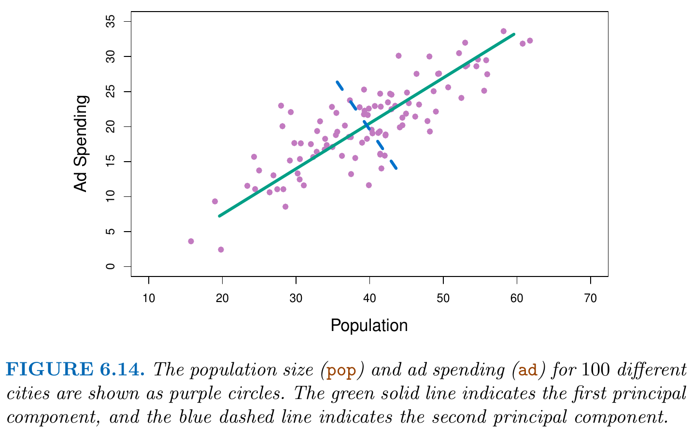
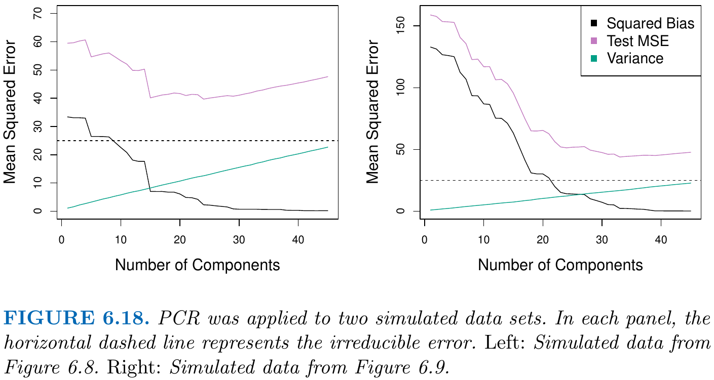
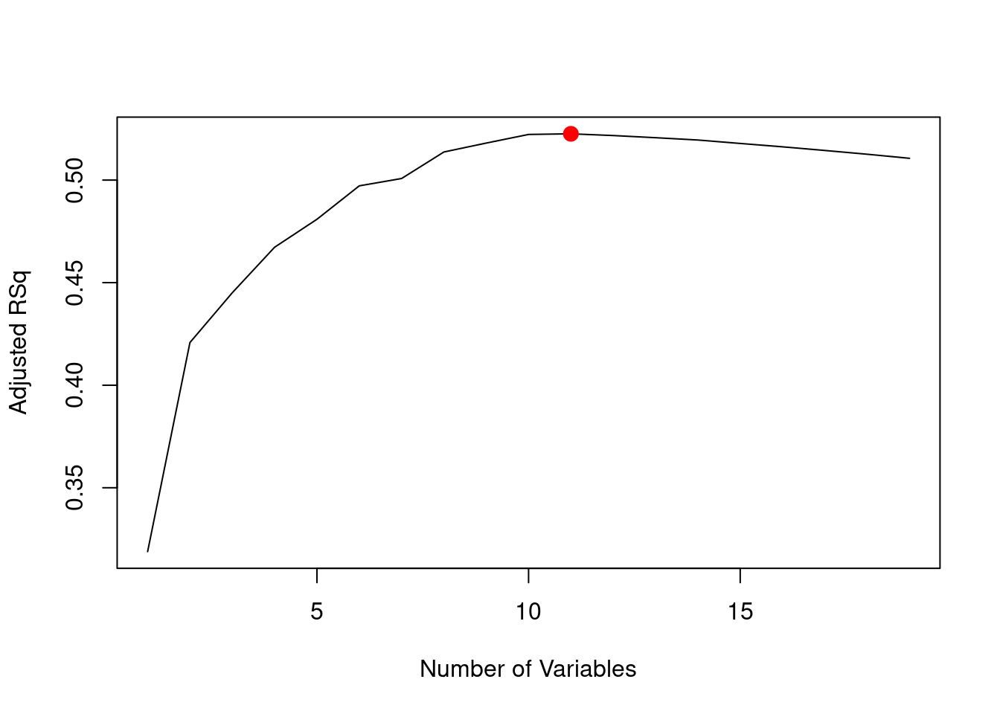
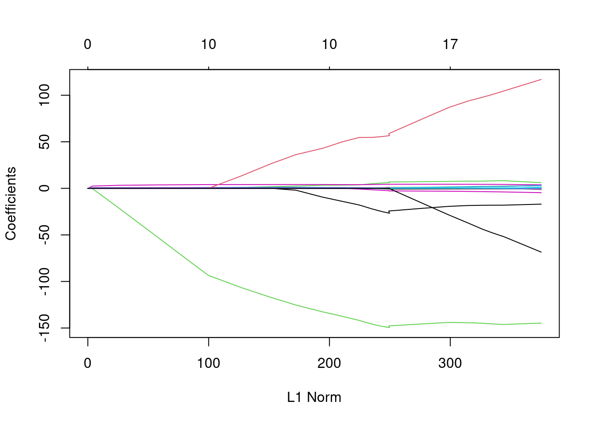

In this chapter, we revisit the linear regression model \[
Y = \beta_0 + \beta_1 X_1 + \dots + \beta_p X_p + \epsilon.
\] In Chapter Chapter 3, we focused on fitting a given linear regression model using least squares and completely ignored the model selection process. However, selecting a “good” model is itself a statistical problem which we need to solve using reliable statistical procedures. In this chapter, we consider fitting procedures that integrate the model selection process.
We discuss three important classes of methods:
Subset Selection. This approach involves identifying a subset of the \(p\) predictors (from a large set of potential predictors) that we believe to be related to the response \(Y\). We then fit a model using least squares on the identified subset of predictors.
Shrinkage/Regularization. This approach involves fitting a model involving all \(p\) predictors—possibly with \(p\gg n\), where least squares does not work anymore. However, the coefficient estimates are shrunken towards zero relative to the least squares estimates. This shrinkage (also known as regularization) has the effect of reducing variance, but increasing bias. Depending on what type of shrinkage is performed, some of the coefficients may be estimated to be exactly zero. In this case, shrinkage methods can also perform variable selection.
Dimension Reduction. This approach involves projecting the \(p\) predictors into an \(M\)-dimensional subspace, where \(M<p\). Then these \(M\) projections are used as predictors to fit a linear regression model by least squares.
(Ch. 6.1) Subset Selection
In the following, we consider linear models with some large set of \(p\) many potentially relevant predictors \(X=(X_1,\dots,X_{p}),\)\[
\begin{align*}
Y
&=\mathcal{M}_{p}(X) + \epsilon\\
&=\beta_0 + \beta_1 X_1 + \dots + \beta_p X_{p} + \epsilon,
\end{align*}
\tag{6.1}\] where \(Var(\epsilon)=\sigma^2,\) and where \(\epsilon\) is independent of the predictors \(X.\)
Let’s assume that only \(k\leq p\) many predictors in Equation 6.1 are actually relevant having non-zero slope coefficients \(|\beta_j|>0,\) and let denote the index set of these relevant predictors by \[
\mathcal{I}^*_{k^*}\subset\{1,2,\dots,p\}\quad\text{with}\quad |\mathcal{I}^*_{k^*}|=k^*\leq p.
\]
In (linear) model selection, one often aims to select the sub-model \[
\mathcal{M}_{\mathcal{I}^*_{k^*}}(X)=\beta_0 + \sum_{j\in\mathcal{I}^*_{k^*}}\beta_j X_j
\] containing all relevant predictors with coefficients \(|\beta_j|>0.\)
A first idea may be to select candidate models \(\mathcal{M}_{\mathcal{I}_k}(X)\) by maximizing the fit to the data; i.e. by maximizing the \(R^2\) or equivalently by minimizing the Residual Sum of Squares (RSS), \[
\begin{align*}
\operatorname{RSS}_k&=\sum_{i=1}^n\left(y_i - \widehat{\mathcal{M}}_{\mathcal{I}_k}(X)\right)^2\\
%R^2_p &=1-\frac{\operatorname{RSS}_p}{TSS}\\
\widehat{\mathcal{M}}_{\mathcal{I}_k}(X) & = \hat\beta_0 + \sum_{j\in\mathcal{I}_k}\hat\beta_j X_j,
%TSS&=\sum_{i=1}^n\left(y_i - \bar{y}\right)^2.
\end{align*}
\] where \(\mathcal{I}_k\) is some candidate sub-set \(\mathcal{I}_k\subset\{1,2,\dots,p\}\) with \(|\mathcal{I}_k|=k\leq p.\)
While this strategy can be used for selecting the best fitting model among all \[
\binom{p}{k}=\frac{p!}{k!(p-k)!}
\] many models with \(k\) parameters, it fails to select the best fitting model with different numbers of parameters. Indeed, one can show that the “fit” of the model can be always increased by adding more predictors; i.e. \[
\operatorname{RSS}_k\geq \operatorname{RSS}_{k'}\quad\text{for}\quad k<k'.
\] Thus, we need alternative criteria to choose between models with different numbers of regressors \(k\neq k'\).
In order to select the best model with respect to test error, we need to estimate this test error. There are two common approaches:
We can directly estimate the test error, using the validation set approach or cross-validation (Chapter 5).
We can indirectly estimate test error by making an adjustment to the training error to account for the bias due to overfitting.
The latter option is accomplished using information criteria such as, for instance, Mellow’s \(C_p\), Akaike Information Criterion (AIC), Bayesian Information Criterion (BIC), and the adjusted \(R^2.\) Information criteria are particularly useful in cases, where cross-validation is computationally too expensive.
Mellow’s \(C_p\)
\[
C_p \equiv C_p(k) = \frac{1}{n}\left(\operatorname{RSS}_k+2k\hat\sigma^2\right),
\tag{6.2}\] where \(\hat\sigma^2=\frac{1}{n-p}\sum_{i=1}^n(y_i - \widehat{\mathcal{M}}_{p}(X))^2\) is the sample variance of the residuals from the large model Equation 6.1 with all \(p\) predictors, and where \(\operatorname{RSS}_k\) are the RSS of the estimated model \(\widehat{\mathcal{M}}_{\mathcal{I}_k}(X)\) with \(k\leq p\) predictors.
Under certain regularity assumptions, one can show that \(C_p\) is an unbiased estimate of the test MSE. The best model is the one which has the lowest \(C_p\) value.
The AIC
The AIC is defined for a large class of models fit by maximum likelihood. If the error terms in the linear regression model Equation 6.1 are Gaussian, maximum likelihood and least squares estimation are equivalent. In this case AIC is given by \[
\operatorname{AIC} \equiv \operatorname{AIC}(k) = \frac{1}{n}\left(\operatorname{RSS}_k + 2 k\hat\sigma^2\right),
\] where \(\hat\sigma^2\) is defined as in Equation 6.2. The above formula for the AIC omits factors that are constant in \(k\) and thus irrelevant for model selection. Hence for least squares the AIC and Mellow’s \(C_p\) are proportional to each other, and thus lead to the same model choices.
The BIC
\[
\operatorname{BIC} \equiv \operatorname{BIC}(k) = \frac{1}{n}\left(\operatorname{RSS}_k + \log(n)2 k\hat\sigma^2\right)
\] where \(\hat\sigma^2\) is defined as in Equation 6.2.
Since \(\log(n)>2\) for any sample size \(n>7,\) the BIC statistic generally places a heavier penalty on models with many predictors, and hence results in the selection of smaller models than Mellow’s \(C_p\) and AIC.
Unlike Mellow’s \(C_p,\) AIC, and BIC, large values of \(\operatorname{adjusted } R^2\) indicate models with low test errors.
Note that maximizing \(\operatorname{adjusted } R^2\) is equivalent to minimizing \(\operatorname{RSS}_k/(n-k-1).\) While \(\operatorname{RSS}_k\) is a decreasing function of \(k,\)\(\operatorname{RSS}_k/(n-k-1)\) may decrease or increase when increasing \(k,\) depending on the amount of RSS-reduction due to the added predictors.
Note: Mellow’s \(C_p,\) AIC, and BIC have rigorous theoretical justifications. The \(\operatorname{adjusted } R^2\) is not es well motivated by statistical theory.
(Ch. 6.1.1) Best Subset Selection
Algorithm 6.1: Best Subset Selection:
Initialization: Let \(\mathcal{M}_0\) denote the null model\(f(X)=\beta_0\) containing no predictors, except the intercept. (This model predicts each observed outcome by the total sample mean.)
For \(k=1,2,\dots,p:\)
Fit all \(\binom{p}{k}\) models that contain exactly \(k\) predictors.
Pick the “best” among these \(\binom{p}{k}\) models, and call it \(\widehat{\mathcal{M}}_k\). Here “best” is defined as having smallest \(\operatorname{RSS}_k\) (or equivalently highest \(R^2.\))
Select a single best model from \(\widehat{\mathcal{M}}_0,\dots,\widehat{\mathcal{M}}_p\) using CV, Mellow’s \(C_p\) (AIC), BIC, or \(\operatorname{adjusted } R^2.\)
Step 2 of Algorithm 6.1 identifies the best model (on training data) for each subset size \(k\), and thus reduces the model selection problem from \(2^p\) models to \(p+1\) models.
Best subset selection (Algorithm 6.1) can be computationally expensive for largish \(p\).
\(p\)
\(2^p\)
\(10\)
\(1024\)
\(20\)
\(1048576\)
\(40\)
\(1.1\cdot 10^{12}\)
Summary:
Best subset selection becomes computationally infeasible for values of \(p\) greater than about \(40\), even with extremely fast modern computers.
Moreover, the larger the search space, the higher the chance of finding models that look good in the training data (Step 2), even tough they might not have any predictive power in test data.
(Ch. 6.1.2) Stepwise Selection
Forward Stepwise Selection
Algorithm 6.2: Forward Stepwise Selection:
Initialization: Let \(\mathcal{M}_0\) denote the null model\(f(X)=\beta_0\) containing no predictors, except the intercept. (This model predicts each observed outcome by the total sample mean.)
For \(k=0,1,\dots,p-1:\)
Fit all \(p-k\) models that augment the predictors in \(\widehat{\mathcal{M}}_k\) with one additional predictor.
Pick the “best” among these \(p-k\) models, and call it \(\widehat{\mathcal{M}}_{k+1}\). Here “best” is defined as having smallest \(\operatorname{RSS}_{k+1}\) (or equivalently highest \(R^2.\))
Select a single best model from \(\widehat{\mathcal{M}}_0,\dots,\widehat{\mathcal{M}}_p\) using CV, Mellow’s \(C_p\) (AIC), BIC, or \(\operatorname{adjusted } R^2.\)
Unlike best subset selection, which involved fitting \(2^p\) models, forward stepwise selection considers a much smaller set of models: It begins with fitting the null \((p=0)\) model, and proceeds with fitting \(p-k\) models in the \(k\)th iteration, for \(k=1,\dots,p-1.\) This amounts to a total of \[
1+\sum_{k=0}^{p-1}(p-k) = 1 + p(p+1)/2
\] models.
\(p\)
\(2^p\)
\(1 + p(p+1)/2\)
\(10\)
\(1024\)
\(56\)
\(20\)
\(1048576\)
\(211\)
\(40\)
\(1.1\cdot 10^{12}\)
\(821\)
Forward stepwise selection is a guided search strategy, that tends to do well in practice. However, it is not guaranteed to find the best possible model out of all \(2^2p\) models containing subsets of the \(p\) predictors.
Example: Consider the case of \(p=3\) predictors \(X_1,\,X_2\) and \(X_3.\) Let the best one-predictor model contain \(X_1\), and let the best two-predictor model contain \(X_2\) and \(X_3.\) Then forward stepwise selection will fail to select the best two-predictor model.
Backward Stepwise Selection
Algorithm 6.3: Backward Stepwise Selection:
Initialization: Let \(\mathcal{M}_p\) denote the full model which contains all \(p\) predictors.
For \(k=p,p-1,\dots,1:\)
Fit all \(k\) models that contain all but one of the predictors in \(\widehat{\mathcal{M}}_k,\) for a total of \(k-1\) predictors.
Pick the “best” among these \(k\) models, and call it \(\widehat{\mathcal{M}}_{k-1}\). Here “best” is defined as having smallest \(\operatorname{RSS}_{k+1}\) (or equivalently highest \(R^2.\))
Select a single best model from \(\widehat{\mathcal{M}}_0,\dots,\widehat{\mathcal{M}}_p\) using CV, Mellow’s \(C_p\) (AIC), BIC, or \(\operatorname{adjusted } R^2.\)
Like forward stepwise selection, the backward selection approach searches through only \(1 + p(p+1)/2\) models, and thus can be applied when \(p\) is too large to apply best subset selection.
Like forward stepwise selection, the backward selection approach is a guided search strategy, that tends to do well in practice. However, it is not guaranteed to find the best possible model out of all \(2^2p\) models containing subsets of the \(p\) predictors.
Backward selection requires that the sample size \(n\) is larger than the number of predictors \(p\) (so that the full model can be fit).
Hybrid Approaches
The above selection algorithms often give similar, but not identical models. The literature knows many alternative selection algorithms such as hybrid approaches in which, for instance, variables are added to the model sequentially, in analogy to forward selection; however, after adding each new variable, the method may also remove any variables that no longer provide an improvement in the model fit.
(Ch. 6.2) Shrinkage Methods
The discussed subset selection methods involve using least squares to fit the linear models. Alternatively, we can fit a model containing all \(p\) predictors using a technique that constrains or regularizes the coefficient estimates by shrinking the coefficient estimates towards zero.
The two best-known techniques for shrinking the regression coefficients towards zero are
Ridge Regression and
Lasso
(Ch. 6.2.1) Ridge Regression
Recall from Chapter 3 that the least squares fitting procedure estimates \(\beta_0, \beta_1, \dots, \beta_p\) using parameter values that minimize the RSS criterion \[
\operatorname{RSS}=\sum_{i=1}^n\left(y_i - \beta_0 - \sum_{j=1}^p\beta_jx_{ij}\right)^2.
\tag{6.3}\]
Ridge regression is very similar to least squares, except that the coefficients are estimated by minimizing a slightly different quantity. The ridge regression coefficient estimates \(\hat\beta^R\) are the values that minimize \[
\begin{align*}
\underbrace{\sum_{i=1}^n\left(y_i - \beta_0 - \sum_{j=1}^p\beta_jx_{ij}\right)^2}_{=\operatorname{RSS}}+\lambda \sum_{j=1}^p\beta_j^2,
%= &\operatorname{RSS} +\lambda \sum_{j=1}^p\beta_j^2,
\end{align*}
\tag{6.4}\] where \(\lambda \sum_{j=1}^p\beta_j^2\) is called shrinkage penalty, and where \(\lambda\) is a tuning parameter that needs to be determined separately. Equation 6.4 trades of two different criteria:
By making RSS small, ridge regression tries to fit the data well.
By making \(\sum_{j=1}^p\beta_j^2=||(\beta_{1},\dots,\beta_{p})'||^2_2\) small, ridge regression shrinks all coefficient estimates towards zero—except the intercept \(\beta_0.\)
\(||\beta||_2 = \sqrt{\sum_{j=1}^p\beta_j^2}\) denotes the \(\ell_2\) (or Euclidean) norm of a \(p\)-dimensional vector \(\beta.\) If \(||\beta||_2\to 0\) then all elements \(\beta_1,\dots,\beta_p\) eventually approach \(0.\)
The tuning parameter \(\lambda\) controls the relative impact of these two terms on the regression coefficient estimates:
When \(\lambda=0\), the penalty term has no effect, and ridge regression will produce the least squares estimates.
As \(\lambda\to\infty\), the impact of the shrinkage penalty grows, and the ridge regression coefficient estimates will approach zero.
Ridge regression will produce a different set of coefficient estimates, \[
\hat\beta_\lambda^R=(\hat\beta_{1,\lambda}^R,\dots,\hat\beta_{p,\lambda}^R)',
\] for each value of \(\lambda.\) Selecting a good value for \(\lambda\) is critical and can be accomplished using, for instance, cross-validation.
Standardized Ridge Regression Coefficients
The RSS criterion of least squares (Equation 6.3) is scale equivariant. Scaling a predictor by a constant \(c\) from \(x_{ij}\) to \(x^S_{ij}=x_{ij}c\) will simply rescale the corresponding least squares estimate from \(\hat\beta_j\) to \(\hat\beta_j^S=\hat\beta_j/c\) such that \[
x_{ij}\hat\beta_j = x_{ij}^S\hat\beta_j^S,\quad i=1,\dots,n
\] which leaves the fitted values unchanged, and thus the RSS value unaffected.
n <-100x <-rnorm(n = n, mean =50000, sd =10000)eps <-rnorm(n = n, mean =0, sd =10000)y <-2+5* x + eps##lm_obj_1 <-lm(y ~ x)RSS_1 <-sum(resid(lm_obj_1)^2)##c <-1/1000# scaling factor x_S <- x * clm_obj_2 <-lm(y ~ x_S)RSS_2 <-sum(resid(lm_obj_2)^2)#### comparing the estimates round(c(coef(lm_obj_1)[2] / c, coef(lm_obj_2)[2]),digits =1)
x x_S
5031.3 5031.3
## comparing the RSS's:c(RSS_1, RSS_2)
[1] 9853402653 9853402653
By contrast, the ridge regression criterion in Equation 6.4 is not scale invariant since scaling the predictors will lead (as seen above) to a rescaling of the coefficient estimates and thus affects the penalty term \(\lambda\sum_{j=1}^p\beta_j^2.\)
Thus, scaling one or more predictors will generally affect all ridge regression estimates \(\hat\beta_{0,\lambda}^R,\dots,\hat\beta_{p,\lambda}^R,\) since typically the regressors are correlated with each other.
Therefore, it is best practice to apply ridge regression after standardizing the predictors, using the formula \[
\tilde{x}_{ij}=\frac{x_{ij}}{\sqrt{\frac{1}{n}\sum_{i=1}^n(x_{ij}-\bar{x}_j)^2}}
\tag{6.5}\] so that they are all on the same scale; i.e. all standardized predictors have a standard deviation of one.
After standardizing the predictors, the ridge regression coefficient estimates do not depend on the different scales on which the predictors were measured.
Ridge regression estimates based on standardized predictors are called standardized ridge regression coefficients. The absolute values of the standardized coefficients allow us to rank the effects of the predictors on the depend variable: the predictor corresponding to the largest (in absolute values) standardized coefficient has the largest effect on the dependent variable.
Figure 6.4 shows the standardized ridge regression coefficient estimates for the Credit dataset. Each curve corresponds to the ridge regression coefficient estimate for one of the ten variables, plotted as a function of \(\lambda\).
Interpretation of Figure 6.4:
The case, where \(||\hat\beta^R_\lambda||_2/||\hat\beta||_2=1\), i.e. where \(\lambda\approx 0\), is equivalent to the least squares fit.
The case where \(||\hat\beta^R_\lambda||_2/||\hat\beta||_2=0\), i.e. where \(\lambda\) is very large, corresponds to the case where \(\hat\beta^R_{\lambda 1}\approx\dots\approx \hat\beta^R_{\lambda p}\approx 0.\)
Why and When Does Ridge Regression Improve Over Least Squares?
Ridge regression’s potential advantage over least squares is rooted in the bias-variance trade-off.
A large value of \(\lambda\) decreases the flexibility of the model, and thus decreases variance, but increases bias.
A small value of \(\lambda\) increases the flexibility of the model, and thus decreases bias, but increases variance.
High variance means that a small change in the training data can cause a large change in the coefficient estimates
Large bias means that the coefficient estimates are on average not equal to the true coefficient values
Figure 6.5 illustrates this, using a simulated data set containing \(p = 45\) predictors and \(n = 50\) observations. When the number of variables \(p\) is almost as large as the number of observations \(n\), as in the example in Figure 6.5, the least squares estimates will be extremely variable.
In comparison to the least squares fit (\(\lambda\approx 0\), \(||\hat\beta^R_\lambda||_2/||\hat\beta||_2=1\)), the ridge regression shows a lower test MSE for an appropriate choice of \(\lambda.\)
Generally, ridge regression outperforms least squares in situations where the least squares estimates have high variance—as in the example of Fig 6.5. In these high variance situations, ridge regression can trade off a small increase in bias for a large decrease in variance leading to an overall reduction in the test MSE.
If \(p > n\), then the least squares estimates do not have a unique solution, but ridge regression estimates are well defined.
Moreover, ridge regression also has substantial computational advantages over best subset selection, which requires searching through \(2^p\) fitted models. In contrast, ridge regression models only need to be fitted once for each candidate tuning parameter \(\lambda.\)
(Ch. 6.2.2) The Lasso
While ridge regression is able to show which predictors are of major vs. minor relevance for predicting the outcome, none of the predictors is actually removed from the model equation since none of the coefficients is exactly set to zero—unless in the limit \(\lambda = \infty,\) but then coefficients are zero (no variable selection).
This may not be a problem with respect to prediction accuracy, but it can create a challenge in model interpretation—particularly in settings in which the number of variables \(p\) is quite large.
For example, in the Credit data set, it appears that the most important variables are income, limit, rating, and student. So we might wish to build a model including just these predictors. However, ridge regression will always generate a model involving all ten predictors.
The lasso is a relatively recent alternative to ridge regression that overcomes this disadvantage. The lasso coefficients, \(\hat\beta_\lambda^L\), minimize \[
\begin{align*}
\underbrace{\sum_{i=1}^n\left(y_i - \beta_0 - \sum_{j=1}^p\beta_jx_{ij}\right)^2}_{=\operatorname{RSS}}+\lambda \sum_{j=1}^p|\beta_j|.
%= &\operatorname{RSS} +\lambda \sum_{j=1}^p\beta_j^2,
\end{align*}
\tag{6.6}\]
By contrast to the ridge regression criterion (Equation 6.4), the lasso criterion uses an \(\ell_1\) norm \[
||(\beta_{1},\dots,\beta_p)'||_1 = \sum_{j=1}^p|\beta_j|
\] as a shrinkage penalty. The \(\ell_1\) penalty has the effect of forcing some of the coefficient estimates to be exactly equal to zero when the tuning parameter \(\lambda\) is sufficiently large.
Lasso yields sparse models—that is, models that involve only a subset of the variables (see Figure 6.6). Sparse models are easier to interpret.
Comparing Lasso, Ridge Regression and Best Subset Selection
One can show that the lasso and ridge regression coefficient estimates solve constrained optimization (minimization) problems.
Lasso: \[
\min_{\beta}\left\{\sum_{i=1}^n\left(y_i - \beta_0 - \sum_{j=1}^p\beta_jx_{ij}\right)^2\right\}\;\text{s.t.}\; \sum_{j=1}^p|\beta_j|\leq s
\tag{6.7}\]
Ridge: \[
\min_{\beta}\left\{\sum_{i=1}^n\left(y_i - \beta_0 - \sum_{j=1}^p\beta_jx_{ij}\right)^2\right\}\;\text{s.t.}\; \sum_{j=1}^p\beta_j^2\leq s
\tag{6.8}\]
That is, for every \(\lambda\) in Equation 6.4 there is some \(s\) such in Equation 6.8 that will lead to the same ridge coefficient estimates, and for every \(\lambda\) in Equation 6.6 there is some \(s\) such in Equation 6.7 that will lead to the same lasso coefficient estimates.
In the case of two \((p=2)\) predictors, one can interpret Equation 6.7 and Equation 6.8 graphically (see Figure 6.7).
the lasso coefficient estimates have the smallest RSS out of all points \((\beta_1,\beta_2)\) that lie within the diamond defined by \(|\beta_1|+|\beta_2|\leq s.\)
the ridge coefficient estimates have the smallest RSS out of all points \((\beta_1,\beta_2)\) that lie within the circle defined by \(\beta_1^2+\beta_2^2\leq s.\)
Interpretation of Figure 6.7:
The tuning parameter \(s\) acts like a budge constraint for how large the penalty term can be. This key idea also applies to cases \(p>2,\) although plotting then becomes difficult/infeasible.
Figure 6.7 shows why lasso is able to perform variable selection, by contrast to ridge regression. The ellipses show coefficient estimates leading to equal RSS values. While the \(\ell_1\) geometry of lasso’s “budge constraint” allows to set a coefficient value to zero (here \(\beta_1\)), the \(\ell_2\) geometry of ridge regression’s budget constraint only allows to shrink a coefficient value towards zero.
Connection with Best Subset Selection
Equation 6.7 and Equation 6.8 reveal a close connection between the lasso, ridge regression, and best subset selection. Consider the problem \[
\min_{\beta}\left\{\sum_{i=1}^n\left(y_i - \beta_0 - \sum_{j=1}^p\beta_jx_{ij}\right)^2\right\}\;\text{s.t.}\; \sum_{j=1}^pI(\beta_j\neq 0)\leq s,
\tag{6.9}\] where \(I(\beta_j\neq 0)=1\) if \(\beta_j\neq 0\) and zero else.
Equation 6.9 amounts to finding a set of at most \(s\) many coefficient estimates such that RSS is as small as possible. The problem of Equation 6.9 is equivalent to Step 2 in Best Subset Selection (Algorithm 6.1) for a given number of predictors \(s\) (or \(k\) in the notation of Algorithm 6.1). The choice of \(s\) (or equivalently \(\lambda\)) is then critical and needs to be done using, for instance, cross-validation.
This insight allows us to interpret ridge regression and lasso (even more so) as computationally feasible versions of Best Subset Regression.
Comparing the Lasso and Ridge Regression
Figure 6.8 displays the variance, squared bias, and test MSE of the lasso applied to the same simulated data as in Figure 6.5; i.e. \(p=45\) and \(n=50.\) Thus, in the case, where many predictors have an effect on the response, ridge regression can perform better than lasso.
Figure 6.9 illustrates a similar situation, except that now the response is a function of only \(p=2\) out of 45 predictors. Now the lasso tends to outperform ridge regression in terms of bias, variance, and MSE.
In general, one might expect the lasso to perform better in sparse models, i.e. in a setting where a relatively small number of predictors have substantial coefficients, and the remaining predictors have coefficients that are very small or equal zero. Ridge regression will perform better when the response is a function of many predictors.
(Ch. 6.2.3) Selecting the Tuning Parameter
Each value of the tuning parameters \(\lambda\) in Equation 6.4 and Equation 6.6 or of the tuning parameters \(s\) in Equation 6.7 and Equation 6.8 represent a new more or less flexible model—similarly to the tuning parameter \(k\), with \(k\leq p\), (i.e., number of predictors included) in Best Subset Selection. Thus, as in Best Subset Selection we need to be carful when comparing models of different size and flexibility.
Cross-validation provides a simple way to tackle this problem. We choose a grid of \(\lambda\) values, and compute the coss-validation error for each value of \(\lambda\), as described in Chapter 5.
We then select the tuning parameter value for which the cross-validation error is smallest. Finally, the model is re-fit using all of the available observations and the selected value of the tuning parameter.
(Ch. 6.3) Dimension Reduction Methods
The methods discussed so far in this chapter are all defined using the total set of predictors \(X_1,X_2,\dots,X_p\) in Equation 6.1. We now explore a class of approaches that transform the set of \(p\) predictors to a reduced set of \(M\leq p\)transformed variables, and then fit a least squares model using only the \(M\) transformed variables as predictors.
Let \(Z_1,\dots,Z_M\) represent \(M\leq p\)linear combinations of our original \(p\) predictors, i.e. \[
Z_m = \sum_{j=1}^p\phi_{jm}X_{j},\quad\text{for}\quad m=1,\dots,M.
\tag{6.10}\]
Given the new predictors \(Z_1,\dots,Z_M\), we can fit the linear regression model \[
y_i = \theta_0 + \sum_{m=1}^M\theta_m z_{im} + \epsilon_i,\quad i=1,\dots,n,
\tag{6.11}\] where \(z_{im}\), \(i=1,\dots,n\), are observed measurements from \(Z_m,\) based on observations \(x_{ij}\) from \(X_j\), and where \(\theta_0,\dots,\theta_M\) are the (unknown) regression coefficients that we estimate using least squares.
If the constants \(\phi_{jm}\) in Equation 6.10 are chosen wisely, then such dimension reduction (from \(p\) to \(M\)) approaches can outperform (lower test MSE) least squares regression.
Notice that the linear combination of the \(M\) transformed predictors, \(z_{i1},\dots,z_{iM}\), in Equation 6.11 can be rewritten as a linear combination of the \(p\) original predictors, \(x_{i1},\dots,x_{ip}\): \[
\begin{align*}
\sum_{m=1}^M\theta_m z_{im}
&= \sum_{m=1}^M\theta_m \overbrace{\left(\sum_{j=1}^p\phi_{jm}x_{ij}\right)}^{z_{im}}\\
&= \sum_{j=1}^p\underbrace{\left(\sum_{m=1}^M\theta_m \phi_{jm}\right)}_{=\beta^M_j}x_{ij}.
\end{align*}
\] Hereby, \[
\beta^M_j = \sum_{m=1}^M\theta_m \phi_{jm}
\tag{6.12}\] serves as a certain regularized version of the coefficients \(\beta_j\) in the original linear model Equation 6.1.
If \(M=p\) (no dimension reduction), and if all \(M\) many \((z_{1m},\dots,z_{nm})',\)\(m=1,\dots,M,\) vectors are linearly independent from each other (i.e. no redundant vectors), then Equation 6.12 poses no constraints and \(\beta_j^M=\beta_j.\)
If \(M<p\) (dimension reduction), Equation 6.12 serves to constrain the estimated \(\beta_j\) coefficients \((\beta_j^M\neq \beta_j).\)
All dimension reduction methods work in two steps.
The transformed predictors \(Z_1,Z_2,\dots,Z_M\) are obtained.
The model is fit using these \(M\leq p\) predictors.
However, the choice of \(Z_1,Z_2,\dots,Z_M,\) or equivalently the selection of the \(\phi_m\)’s, can be achieved in different ways.
The best known dimension reduction approach is principal components regression.
(Ch. 6.3.1) Principal Components Regression
Principal components regression regression uses principal components to derive new (low dimensional) predictors. Thus, in a first step we need to discuss principal components analysis (PCA) to construct principal components.
Principal Component Analysis (PCA)
Reading: Chapter 12.2.1 of our textbook.
Principal components analysis is a popular approach for deriving a low-dimensional \((M<p)\) set of features \(Z_1,Z_2,\dots,Z_M\) from a large set of variables \(X_1,X_2,\dots,X_p.\)
The first principal component (or better principal component score) of a set of variables \(X_1,X_2,\dots,X_p\) is the normalized linear combination \[
Z_1 = \phi_{11}X_{1} + \dots + \phi_{p1}X_{p},
\] that maximizes the variance of \(Z_1.\) By normalized, we mean that the \(\ell_2\) norm of \(\phi_1=(\phi_{11},\dots,\phi_{p1})'\) must equal one, i.e. \[
\sum_{j=1}^p\phi_{j1}^2=||\phi_1||_2^2=1;
\] otherwise we could make the variance of \(Z_1\) arbitrarily large by simply by choosing \(\phi_1\) such that \(||\phi_1||_2^2\) is large.
The vector \(\phi_1=(\phi_{11},\dots,\phi_{p1})'\) is called the principal component loadings vector. An in absolute values large loading parameter \(\phi_{1j}\) means that the \(j\)th predictor \(X_j\) contributes much to the first principal component score \(Z_1.\)
To estimate the coefficients \(\phi_1=(\phi_{11},\dots,\phi_{p1})',\) we need observed measurements of the features \(X_1,\dots,X_p.\) We collect these observed measurements in a \(n\times p\) dimensional data matrix \(\mathbf{X},\) such that \[
\mathbf{X} = \left[
\begin{matrix}
x_{11}&x_{12}&\dots&x_{1p}\\
\vdots&\vdots&\vdots&\vdots\\
x_{n1}&x_{n2}&\dots&x_{np}\\
\end{matrix}
\right],
\] where the columns in \(\mathbf{X}\) are centered. That is, the \(j\)th data column in \(X\) consists of centered data points \[x_{ij}=x^{orig}_{ij}-\bar{x}^{orig}_j
\quad\text{with}\quad
\bar{x}^{orig}_j = \frac{1}{n}\sum_{i=1}^nx_{ij}^{orig}
\] such that the sample mean of each column in \(X\) is zero, i.e. \[
\bar{x}_{j} = \frac{1}{n}\sum_{i=1}^nx_{ij}=0
\] for each \(j=1,\dots,p.\)
Therefore, the formula for the sample variance of \(z_{i1}\), \(i=1,\dots,n\), simplifies as following: \[
\frac{1}{n}\sum_{i=1}^n\left(z_{i1}-\bar{z}_1\right)^2=\frac{1}{n}\sum_{i=1}^nz_{i1}^2
\tag{6.13}\]
To determine the first principal component scores\[
z_{11},\dots,z_{n1},
\] we need to find that loading vector \(\phi_1=(\phi_{11},\dots,\phi_{p1})'\) that maximizes the sample variance \[
\frac{1}{n}\sum_{i=1}^nz_{i1}^2 = \frac{1}{n}\sum_{i=1}^n\left(\phi_{11}x_{i1} + \dots + \phi_{p1}x_{ip}\right)^2
\] subject to the side constraint that \(||\phi_1||_2^2=1.\) In other words, the first principal component loading vector \(\phi_1=(\phi_{11},\dots,\phi_{p1})'\) is determined as the solution of the optimization problem \[
\max_{\phi_{11},\dots,\phi_{p1}}\underbrace{\left\{\frac{1}{n}\sum_{i=1}^n\left(\sum_{j=1}^p\phi_{j1}x_{ij}\right)^2\right\}}_{=\frac{1}{n}\sum_{i=1}^nz_{i1}^2}\quad\text{s.t.}\quad\sum_{j=1}^p\phi_{j1}^2=1,
\] where \(\frac{1}{n}\sum_{i=1}^nz_{i1}^2\) equals the sample variance of \(z_{11},\dots,z_{n1}\) (see Equation 6.13).
There is a nice geometric interpretation for the first principal component (likewise for the further principal components). The first loading vector \[
\phi_1=(\phi_{11},\dots,\phi_{p1})'
\] defines a direction vector in the feature space along which the data points vary the most. If we project each of the \(n\) many \(p\)-dimensional data points \[
\begin{align*}
x_1 &=(x_{11},\dots,x_{1p})'\\
&\; \vdots \\
x_n &=(x_{n1},\dots,x_{np})'
\end{align*}
\] onto the direction vector \(\phi_1=(\phi_{11},\dots,\phi_{p1})'\), the projected values are the principal component scores\(z_{11},\dots,z_{n1}\) themselves, i.e \[
\begin{align*}
z_{11} & = \phi_1'x_1 = \sum_{j=1}^p \phi_{j1}x_{1j}\\
&\;\;\;\vdots \\
z_{n1} & = \phi_1'x_n = \sum_{j=1}^p \phi_{j1}x_{nj}.
\end{align*}
\]
The case \(p=2\) is simple to visualize. Figure 6.14 displays the direction of the first principal component loading vector \(\phi_1\) (green solid line) on an advertising data set. 
The left panel in Figure 6.15 displays the projection of the \(i\)th, \(i=1,\dots,n,\) data vectors \(x_i=(x_{i1},x_{i2})'\) (purple circles 🟣) onto the first loading vector \(\phi_1=(\phi_{11},\phi_{21})'\) leading to the \(i\)th principal component score \(z_{i1},\)\(i=1,\dots,n,\) (black crosses \(\mathbf{\times}\).
Higher order principal components
After the first principal component of the features has been determined, we can find the second principal component. The second principal component is the linear combination of \(X_1,X_2,\dots,X_p\) that has maximal variance out of all linear combinations that are uncorrelated with \(Z_1.\)
Thus, the second principal component scores \(z_{12},\dots,z_{np}\) take the form \[
z_{i2} = \phi_2'x_i = \sum_{j=1}^p \phi_{j2}x_{ij},
\] where \(\phi_2=(\phi_{12},\dots,\phi_{p2})'\) is the second principal component loading vector with \(||\phi_2||_2^2=1.\)
Constraining \(Z_2\) to be uncorrelated with \(Z_1\) is equivalent to constraining \(\phi_2\) to be orthogonal to \(\phi_1\), i.e. the inner product of \(\phi_1\) and \(\phi_2\) must be zero, \[
\phi_2'\phi_1=\sum_{j=1}^p\phi_{j2}\phi_{j1}=0.
\] Therefore, the loading vector \(\phi_2=(\phi_{12},\dots,\phi_{p2})'\) is determined by the solution of \[
\begin{align*}
\max_{\phi_{12},\dots,\phi_{p2}}&\underbrace{\left\{\frac{1}{n}\sum_{i=1}^n\left(\sum_{j=1}^p\phi_{j2}x_{ij}\right)^2\right\}}_{=\frac{1}{n}\sum_{i=1}^nz_{i2}^2}\\
\text{such that}& \quad \sum_{j=1}^p\phi_{j2}^2=1\quad\\
\text{and}& \quad \sum_{j=1}^p\phi_{j1}\phi_{j2}=0.
\end{align*}
\] Correspondingly, the \(m\)th \((m=1,\dots,M)\) loading vector \(\phi_m=(\phi_{1m},\dots,\phi_{pm})'\) is determined by the solution of \[
\begin{align*}
\max_{\phi_{1m},\dots,\phi_{pm}}&\underbrace{\left\{\frac{1}{n}\sum_{i=1}^n\left(\sum_{j=1}^p\phi_{jm}x_{ij}\right)^2\right\}}_{=\frac{1}{n}\sum_{i=1}^nz_{im}^2}\\
\text{such that}&\quad\sum_{j=1}^p\phi_{jm}^2=1\quad\\
\text{and}&\quad \sum_{j=1}^p\phi_{j\ell}\phi_{jm}=0\quad\text{for all}\quad 0\leq \ell<m,
\end{align*}
\] with \(\phi_0=(\phi_{10},\dots,\phi_{p0})'=(0,\dots,0)'.\)
Again, the case \(p=2\) is simple to visualize. If \(p=2\) there are only \(M=2\) principal components. As shown in Figure 6.14, the second principal components loading vector \(\phi_2\) (blue dashed line) is orthogonal to the first loading vector \(\phi_1\) (green solid line). Thus when rotating the coordinate system such that the direction of the first loading vector becomes the x-axis, then the direction of the second loading vector becomes the the orthogonal y-axis (see right panel of Figure 6.15).
The Principal Components Regression Approach
The principal components regression (PCR) approach fits the model in Equation 6.11 which we repeat here for convenience: \[
y_i = \theta_0 + \sum_{m=1}^M\theta_m z_{im} + \epsilon_i,
\] where \(z_{1m},\dots,z_{nm}\) are the \(m\)th principal component scores, and where the number of principal components \(M\) acts as a tuning parameter.
The key idea is that often a small number \(M\ll p\) of principal components suffice to explain most of the variability in the data \(\mathbf{X}.\) Therefore, often a relatively low number of principal components \(M\ll p\) suffices to achieve very good predictions (low test MSE).
Generally, fitting a least squares model to \(z_{i1},\dots,z_{iM},\)\(i=1,\dots,n,\) leads to better results than fitting a least squares model to \(x_{i1},\dots,x_{ip},\) particularly when \(p\approx n,\) since typically most of the information in the data \(\mathbf{X}\) that relates to the response is contained in \(z_{i1},\dots,z_{iM},\)\(i=1,\dots,n,\) and by estimating only \(M\ll p\) coefficients we can mitigate overfitting (high variance).
Figure 6.18 displays the PCR fits on the simulated data sets from Figures 6.8 and 6.9.
Recall that both data sets were generated using \(n = 50\) observations and \(p = 45\) predictors. However, while the response in the first data set was a function of all the \(p=45\) predictors (Figure 6.8), the response in the second data set was generated using only \(p=2\) of the predictors (Figure 6.9).

The curves in Figure 6.18 are plotted as a function of \(M,\) the number of principal components used as predictors in the regression model.
For \(M = p\), PCR is equivalent to a classic least squares fit using all of the original predictors
large \(M\) values lead to flexible models with low bias, but large variance
small \(M\) values lead to inflexible models with large bias, but low variance
The latter two points lead to the typical U-shape of the test MSE.
Figure 6.18 indicates that PCR based on an appropriate choice of \(M\) can substantially reduce the test MSE in comparison to classic least squares regression. In PCR, the number of principal components, \(M,\) is typically chosen by cross-validation.
Standardize the predictor variables. When performing PCR, it is generally a good idea to standardize each predictor, using Equation 6.5, prior to generating the principal components. Standardization ensures that all variables are on the same scale. In the absence of standardization, the high-variance predictors will tend to play a larger role in the principal components obtained, and thus the scale on which the variables are measured will ultimately have an effect on the final PCR model.
6.1R-Lab: Linear Model Selection and Regularization
6.1.1 Subset Selection Methods
6.1.1.1 Best Subset Selection
Here we apply the best subset selection approach to the Hitters data. We wish to predict a baseball player’s Salary on the basis of various statistics associated with performance in the previous year.
First of all, we note that the Salary variable is missing for some of the players. The is.na() function can be used to identify the missing observations. It returns a vector of the same length as the input vector, with a TRUE for any elements that are missing, and a FALSE for non-missing elements. The sum() function can then be used to count all of the missing elements.
library(ISLR2) # load library 'ISLR2' (contains the data)names(Hitters) # check variable names of the Hitters data set
dim(Hitters) # check sample size n and number of predictors p
[1] 322 20
sum(is.na(Hitters$Salary)) # number of missing Salary observations
[1] 59
Hence we see that Salary is missing for \(59\) players. The na.omit() function removes all of the rows that have missing values in any variable.
Hitters <-na.omit(Hitters) # remove all rows containing missing data points dim(Hitters) # check sample size n and number of predictors p
[1] 263 20
sum(is.na(Hitters)) # no missing values anymore
[1] 0
The regsubsets() function (part of the leaps library) performs best subset selection by identifying the best model that contains a given number of predictors, where best is quantified using RSS. The syntax is the same as for lm(). The summary() command outputs the best set of variables for each model size.
library(leaps)regfit_full <-regsubsets(Salary ~ ., nvmax =8, # largest number of predictorsnbest =1, # number of subsets of each size to recordmethod ="exhaustive",# Best Subset Selectiondata = Hitters)summary(regfit_full)
An asterisk indicates that a given variable is included in the corresponding model. For instance, this output indicates that the best two-variable model contains only Hits and CRBI. By default, regsubsets() only reports results up to the best eight-variable model. But the nvmax option can be used in order to return as many variables as are desired. Next, we fit up to a 19-variable model.
regfit_full <-regsubsets(Salary ~ ., nvmax =19, # largest number of predictorsnbest =1, # number of subsets of each size to recordmethod ="exhaustive",# Best Subset Selectiondata = Hitters)reg_summary <-summary(regfit_full)
The summary() function also returns \(R^2\), RSS, adjusted \(R^2\), \(C_p\), and BIC. We can examine these to try to select the best overall model.
For instance, we see that the \(R^2\) statistic increases from \(32\,\%\), when only one variable is included in the model, to almost \(55\,\%\), when all variables are included. That is, as expected, the \(R^2\) statistic increases monotonically as more variables are included. (Equivalently, RSS decreases monotonically as more variables are includes.)
Plotting RSS, adjusted \(R^2\), \(C_p\), and BIC for all of the models at once will help us decide which model to select. Note the type = "l" option tells R to connect the plotted points with lines.
par(mfrow =c(1, 2))plot(reg_summary$rss, xlab ="Number of Variables",ylab ="RSS", type ="l")plot(reg_summary$adjr2, xlab ="Number of Variables",ylab ="Adjusted RSq", type ="l")
The points() command works like the plot() command, except that it puts points on a plot that has already been created, instead of creating a new plot. The which.max() function can be used to identify the location of the maximum point of a vector. We will now plot a red dot to indicate the model with the largest adjusted \(R^2\) statistic.
which.max(reg_summary$adjr2)
[1] 11
plot(reg_summary$adjr2, xlab ="Number of Variables",ylab ="Adjusted RSq", type ="l")points(11, reg_summary$adjr2[11], col ="red", cex =2, pch =20)

In a similar fashion we can plot the \(C_p\) and BIC statistics, and indicate the models with the smallest statistic using which.min().
plot(reg_summary$cp, xlab ="Number of Variables",ylab ="Cp", type ="l")which.min(reg_summary$cp)
[1] 10
points(10, reg_summary$cp[10], col ="red", cex =2,pch =20)
which.min(reg_summary$bic)
[1] 6
plot(reg_summary$bic, xlab ="Number of Variables",ylab ="BIC", type ="l")points(6, reg_summary$bic[6], col ="red", cex =2,pch =20)
The regsubsets() function has a built-in plot() command which can be used to display the selected variables for the best model with a given number of predictors, ranked according to the BIC, \(C_p\), adjusted \(R^2\), or AIC. To find out more about this function, type ?plot.regsubsets. The grey-shading represents a color-code for the selected information criterion.
plot(regfit_full, scale ="r2")
plot(regfit_full, scale ="adjr2")
plot(regfit_full, scale ="Cp")
plot(regfit_full, scale ="bic")
The top row of each plot contains a black square for each variable selected according to the optimal model associated with that statistic. For instance, we see that several models share a BIC close to \(-150\). However, the model with the lowest BIC is the six-variable model that contains only AtBat, Hits, Walks, CRBI, DivisionW, and PutOuts.
We can use the coef() function to see the coefficient estimates associated with this model. To find the correct id we need to find the number of the model shown in the output of summary(regfit_full).
We can also use the regsubsets() function to perform forward stepwise or backward stepwise selection, using the argument method = "forward" or method = "backward".
regfit.fwd <-regsubsets(Salary ~ ., data = Hitters,nvmax =19, method ="forward")summary(regfit.fwd)
For instance, we see that using forward stepwise selection, the best one-variable model contains only CRBI, and the best two-variable model additionally includes Hits. For this data, the best one-variable through six-variable models are each identical for best subset and forward selection. However, the best seven-variable models identified by forward stepwise selection, backward stepwise selection, and best subset selection are different.
6.1.1.3 Choosing Among Models Using the Validation-Set Approach and cross-validation
We just saw that it is possible to choose among a set of models of different sizes using \(C_p\), BIC, and adjusted \(R^2\). We will now consider how to do this using the validation set and cross-validation approaches.
In order for these approaches to yield accurate estimates of the test error, we must use only the training observations to perform all aspects of model-fitting—including variable selection. Therefore, the determination of which model of a given size is best must be made using only the training observations. This point is subtle but important. If the full data set is used to perform the best subset selection step, the validation set errors and cross-validation errors that we obtain will not be accurate estimates of the test error.
In order to use the validation set approach, we begin by splitting the observations into a training set and a test set. We do this by creating a random vector, train, of elements equal to TRUE if the corresponding observation is in the training set, and FALSE otherwise. The vector test has a TRUE if the observation is in the test set, and a FALSE otherwise. Note the ! in the command to create test causes TRUEs to be switched to FALSEs and vice versa. We also set a random seed so that the user will obtain the same training set/test set split.
Notice that we subset the Hitters data frame directly in the call in order to access only the training subset of the data, using the expression Hitters[train, ]. We now compute the validation set error for the best model of each model size. We first make a model matrix from the test data.
test.mat <-model.matrix(Salary ~ ., data = Hitters[test, ])
The model.matrix() function is used in many regression packages for building an \(X\) matrix from data. Now we run a loop, and for each size i, we extract the coefficients from regfit.best for the best model of that size, multiply them into the appropriate columns of the test model matrix to form the predictions, and compute the test MSE.
val.errors <-rep(NA, 19)for (i in1:19){ coefi <-coef(regfit.best, id = i) pred <- test.mat[, names(coefi)] %*% coefi val.errors[i] <-mean((Hitters$Salary[test] - pred)^2)}
We find that the best model is the one that contains seven variables.
This was a little tedious, partly because there is no predict() method for regsubsets(). Since we will be using this function again, we can capture our steps above and write our own predict method.
predict.regsubsets <-function(object, newdata, id, ...) { form <-as.formula(object$call[[2]]) mat <-model.matrix(form, newdata) coefi <-coef(object, id = id) xvars <-names(coefi) mat[, xvars] %*% coefi }
Our function pretty much mimics what we did above. The only complex part is how we extracted the formula used in the call to regsubsets(). We demonstrate how we use this function below, when we do cross-validation.
Finally, we perform best subset selection on the full data set, and select the best seven-variable model. It is important that we make use of the full data set in order to obtain more accurate coefficient estimates. Note that we perform best subset selection on the full data set and select the best seven-variable model, rather than simply using the variables that were obtained from the training set, because the best seven-variable model on the full data set may differ from the corresponding model on the training set.
regfit.best <-regsubsets(Salary ~ ., data = Hitters,nvmax =19)coef(regfit.best, 7)
In fact, we see that the best seven-variable model on the full data set has a different set of variables than the best seven-variable model on the training set.
We now try to choose among the models of different sizes using cross-validation. This approach is somewhat involved, as we must perform best subset selection within each of the \(k\) training sets. Despite this, we see that with its clever subsetting syntax, R makes this job quite easy. First, we create a vector that allocates each observation to one of \(k=10\) folds, and we create a matrix in which we will store the results.
Now we write a for loop that performs cross-validation. In the \(j\)th fold, the elements of folds that equal j are in the test set, and the remainder are in the training set. We make our predictions for each model size (using our new predict() method), compute the test errors on the appropriate subset, and store them in the appropriate slot in the matrix cv.errors. Note that in the following code R will automatically use our predict.regsubsets() function when we call predict() because the best.fit object has class regsubsets.
for (j in1:k) { best.fit <-regsubsets(Salary ~ .,data = Hitters[folds != j, ],nvmax =19)for (i in1:19) { pred <-predict(best.fit, Hitters[folds == j, ], id = i) cv.errors[j, i] <-mean((Hitters$Salary[folds == j] - pred)^2) } }
This has given us a \(10 \times 19\) matrix, of which the \((j,i)\)th element corresponds to the test MSE for the \(j\)th cross-validation fold for the best \(i\)-variable model. We use the apply() function to average over the columns of this matrix in order to obtain a vector for which the \(i\)th element is the cross-validation error for the \(i\)-variable model.
par(mfrow =c(1, 1))plot(mean.cv.errors, type ="b")
We see that cross-validation selects a 10-variable model. We now perform best subset selection on the full data set in order to obtain the 10-variable model.
reg.best <-regsubsets(Salary ~ ., data = Hitters,nvmax =19)coef(reg.best, 10)
We will use the glmnet package in order to perform ridge regression and the lasso. The main function in this package is glmnet(), which can be used to fit ridge regression models, lasso models, and more. This function has slightly different syntax from other model-fitting functions that we have encountered thus far in this book. In particular, we must pass in an x matrix as well as a y vector, and we do not use the {} syntax. We will now perform ridge regression and the lasso in order to predict Salary on the Hitters data. Before proceeding ensure that the missing values have been removed from the data, as described in Section 6.5.1.
x <-model.matrix(Salary ~ ., Hitters)[, -1]y <- Hitters$Salary
The model.matrix() function is particularly useful for creating x; not only does it produce a matrix corresponding to the \(19\) predictors but it also automatically transforms any qualitative variables into dummy variables. The latter property is important because glmnet() can only take numerical, quantitative inputs.
6.1.2.1 Ridge Regression
The glmnet() function has an alpha argument that determines what type of model is fit. If alpha=0 then a ridge regression model is fit, and if alpha=1 then a lasso model is fit. We first fit a ridge regression model.
By default the glmnet() function performs ridge regression for an automatically selected range of \(\lambda\) values. However, here we have chosen to implement the function over a grid of values ranging from \(\lambda=10^{10}\) to \(\lambda=10^{-2}\), essentially covering the full range of scenarios from the null model containing only the intercept, to the least squares fit. As we will see, we can also compute model fits for a particular value of \(\lambda\) that is not one of the original grid values. Note that by default, the glmnet() function standardizes the variables so that they are on the same scale. To turn off this default setting, use the argument standardize = FALSE.
Associated with each value of \(\lambda\) is a vector of ridge regression coefficients, stored in a matrix that can be accessed by coef(). In this case, it is a \(20 \times 100\) matrix, with \(20\) rows (one for each predictor, plus an intercept) and \(100\) columns (one for each value of \(\lambda\)).
dim(coef(ridge.mod))
[1] 20 100
We expect the coefficient estimates to be much smaller, in terms of \(\ell_2\) norm, when a large value of \(\lambda\) is used, as compared to when a small value of \(\lambda\) is used. These are the coefficients when \(\lambda=11{,}498\), along with their \(\ell_2\) norm:
In contrast, here are the coefficients when \(\lambda=705\), along with their \(\ell_2\) norm. Note the much larger \(\ell_2\) norm of the coefficients associated with this smaller value of \(\lambda\).
We can use the predict() function for a number of purposes. For instance, we can obtain the ridge regression coefficients for a new value of \(\lambda\), say \(50\):
predict(ridge.mod, s =50, type ="coefficients")[1:20, ]
We now split the samples into a training set and a test set in order to estimate the test error of ridge regression and the lasso. There are two common ways to randomly split a data set. The first is to produce a random vector of TRUE, FALSE elements and select the observations corresponding to TRUE for the training data. The second is to randomly choose a subset of numbers between \(1\) and \(n\); these can then be used as the indices for the training observations. The two approaches work equally well. We used the former method in Section 6.5.1. Here we demonstrate the latter approach.
We first set a random seed so that the results obtained will be reproducible.
Next we fit a ridge regression model on the training set, and evaluate its MSE on the test set, using \(\lambda=4\). Note the use of the predict() function again. This time we get predictions for a test set, by replacing type="coefficients" with the newx argument.
The test MSE is \(142{,}199\). Note that if we had instead simply fit a model with just an intercept, we would have predicted each test observation using the mean of the training observations. In that case, we could compute the test set MSE like this:
mean((mean(y[train]) - y.test)^2)
[1] 224669.9
We could also get the same result by fitting a ridge regression model with a very large value of \(\lambda\). Note that 1e10 means \(10^{10}\).
ridge.pred <-predict(ridge.mod, s =1e10, newx = x[test, ])mean((ridge.pred - y.test)^2)
[1] 224669.8
So fitting a ridge regression model with \(\lambda=4\) leads to a much lower test MSE than fitting a model with just an intercept. We now check whether there is any benefit to performing ridge regression with \(\lambda=4\) instead of just performing least squares regression. Recall that least squares is simply ridge regression with \(\lambda=0\).
ridge.pred <-predict(ridge.mod, s =0, newx = x[test, ],exact = T, x = x[train, ], y = y[train])mean((ridge.pred - y.test)^2)
In general, if we want to fit a (unpenalized) least squares model, then we should use the lm() function, since that function provides more useful outputs, such as standard errors and p-values for the coefficients.
In general, instead of arbitrarily choosing \(\lambda=4\), it would be better to use cross-validation to choose the tuning parameter \(\lambda\). We can do this using the built-in cross-validation function, cv.glmnet(). By default, the function performs ten-fold cross-validation, though this can be changed using the argument nfolds. Note that we set a random seed first so our results will be reproducible, since the choice of the cross-validation folds is random.
Therefore, we see that the value of \(\lambda\) that results in the smallest cross-validation error is \(326\). What is the test MSE associated with this value of \(\lambda\)?
ridge.pred <-predict(ridge.mod, s = bestlam,newx = x[test, ])mean((ridge.pred - y.test)^2)
[1] 139856.6
This represents a further improvement over the test MSE that we got using \(\lambda=4\). Finally, we refit our ridge regression model on the full data set, using the value of \(\lambda\) chosen by cross-validation, and examine the coefficient estimates.
out <-glmnet(x, y, alpha =0)predict(out, type ="coefficients", s = bestlam)[1:20, ]
As expected, none of the coefficients are zero—ridge regression does not perform variable selection!
6.1.2.2 The Lasso
We saw that ridge regression with a wise choice of \(\lambda\) can outperform least squares as well as the null model on the Hitters data set. We now ask whether the lasso can yield either a more accurate or a more interpretable model than ridge regression. In order to fit a lasso model, we once again use the glmnet() function; however, this time we use the argument alpha=1. Other than that change, we proceed just as we did in fitting a ridge model.
Warning in regularize.values(x, y, ties, missing(ties), na.rm = na.rm):
collapsing to unique 'x' values

We can see from the coefficient plot that depending on the choice of tuning parameter, some of the coefficients will be exactly equal to zero. We now perform cross-validation and compute the associated test error.
This is substantially lower than the test set MSE of the null model and of least squares, and very similar to the test MSE of ridge regression with \(\lambda\) chosen by cross-validation.
However, the lasso has a substantial advantage over ridge regression in that the resulting coefficient estimates are sparse. Here we see that 8 of the 19 coefficient estimates are exactly zero. So the lasso model with \(\lambda\) chosen by cross-validation contains only eleven variables.
out <-glmnet(x, y, alpha =1, lambda = grid)lasso.coef <-predict(out, type ="coefficients",s = bestlam)[1:20, ]lasso.coef
Principal components regression (PCR) can be performed using the pcr() function, which is part of the pls library. We now apply PCR to the Hitters data, in order to predict Salary. Again, we ensure that the missing values have been removed from the data, as described in Section 6.5.1.
library(pls)
Attaching package: 'pls'
The following object is masked from 'package:stats':
loadings
set.seed(2)pcr.fit <-pcr(Salary ~ ., data = Hitters, scale =TRUE,validation ="CV")
The syntax for the pcr() function is similar to that for lm(), with a few additional options. Setting scale = TRUE has the effect of standardizing each predictor, using ( 6.6), prior to generating the principal components, so that the scale on which each variable is measured will not have an effect. Setting validation = "CV" causes pcr() to compute the ten-fold cross-validation error for each possible value of \(M\), the number of principal components used. The resulting fit can be examined using summary().
The CV score is provided for each possible number of components, ranging from \(M=0\) onwards. (We have printed the CV output only up to \(M=4\).) Note that pcr() reports the root mean squared error; in order to obtain the usual MSE, we must square this quantity. For instance, a root mean squared error of \(352.8\) corresponds to an MSE of \(352.8^2=124{,}468\).
One can also plot the cross-validation scores using the validationplot() function. Using val.type = "MSEP" will cause the cross-validation MSE to be plotted.
validationplot(pcr.fit, val.type ="MSEP")
We see that the smallest cross-validation error occurs when \(M=18\) components are used. This is barely fewer than \(M=19\), which amounts to simply performing least squares, because when all of the components are used in PCR no dimension reduction occurs. However, from the plot we also see that the cross-validation error is roughly the same when only one component is included in the model. This suggests that a model that uses just a small number of components might suffice.
The summary() function also provides the percentage of variance explained in the predictors and in the response using different numbers of components. This concept is discussed in greater detail in Chapter 12. Briefly, we can think of this as the amount of information about the predictors or the response that is captured using \(M\) principal components. For example, setting \(M=1\) only captures \(38.31\,\%\) of all the variance, or information, in the predictors. In contrast, using \(M=5\) increases the value to \(84.29\,\%\). If we were to use all \(M=p=19\) components, this would increase to \(100\,\%\).
We now perform PCR on the training data and evaluate its test set performance.
This test set MSE is competitive with the results obtained using ridge regression and the lasso. However, as a result of the way PCR is implemented, the final model is more difficult to interpret because it does not perform any kind of variable selection or even directly produce coefficient estimates.
Finally, we fit PCR on the full data set, using \(M=5\), the number of components identified by cross-validation.


{kind=link}